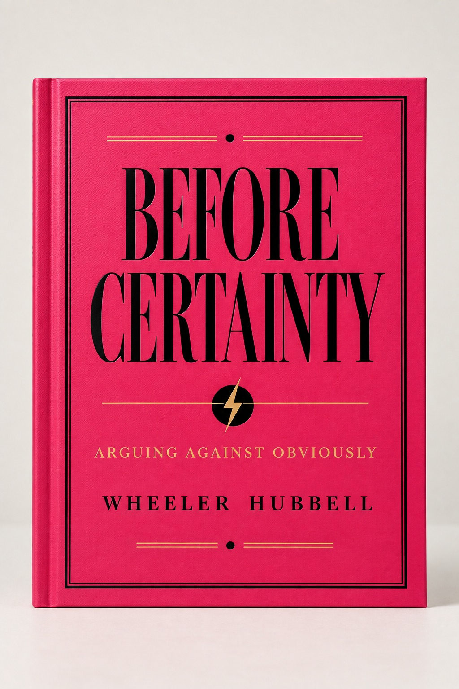
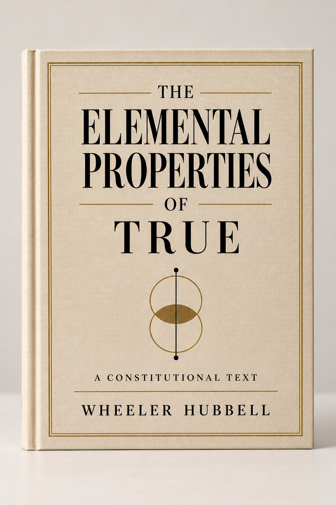
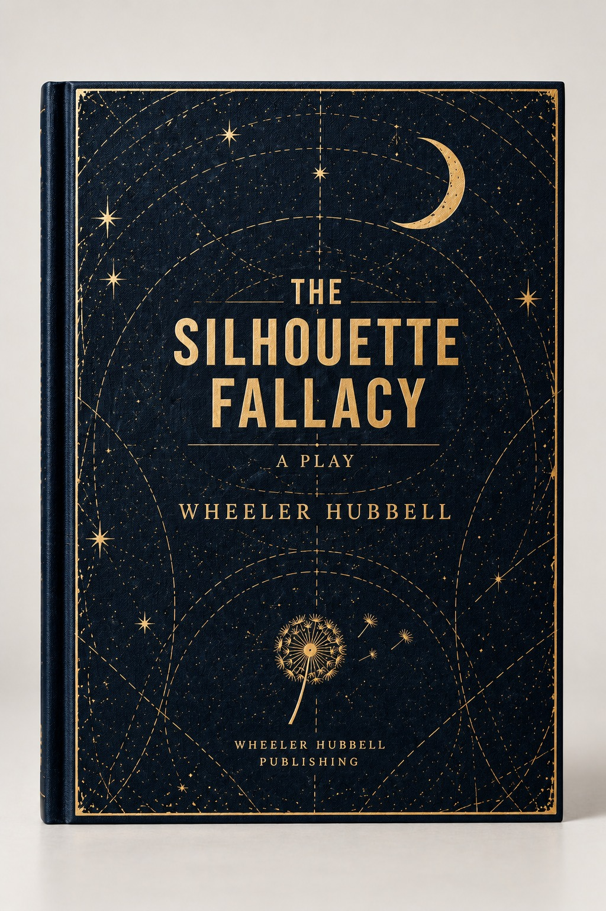
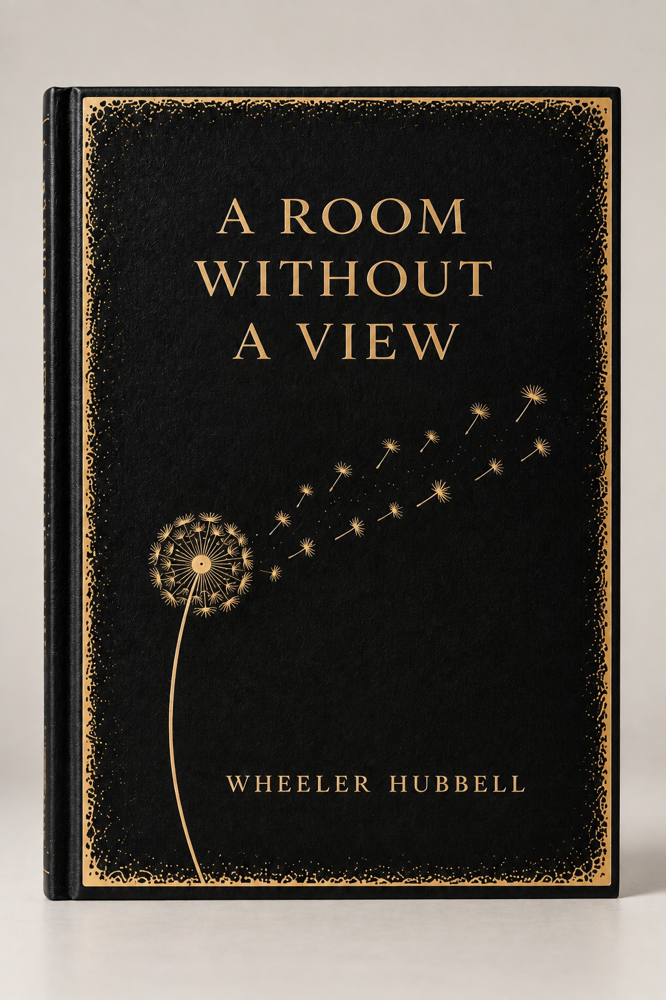

We publish works that protect distinctions, restore jurisdiction, and return reality to the record.
An independent intellectual press dedicated to enduring literature, constitutional jurisprudence, and formal decision integrity.
We publish works that protect distinctions, restore jurisdiction, and return reality to the record.
An independent intellectual press dedicated to enduring literature, constitutional jurisprudence, and formal decision integrity.
“The paper holds what memory cannot. Reality survives arrangement.”— Wheeler Hubbell
An independent institution for record, distinction, and human clarity.
Learn More →Works published to preserve understanding and return reality to its place.
View Catalogue →Numbered monographs in constitutional continuity and epistemology.
Read Register →Eight inquiries to separate assertion from authority in critical choices.
The Protocol →Monthly dispatches on record, distinction, and the human condition.
Enter Room →Publications of Wheeler Hubbell in literary, philosophical, dramatic, and constitutional forms. Produced as durable physical instruments with smyth-sewn bindings, custom cloth, and archival paper.

Arguing Against Obviously
A rigorous examination of premature cognitive closure, showing how intellectual certainty frequently acts as a defensive substitute for observation.

A Constitutional Text
A constitutional formulation treating truth not as an aesthetic preference or rhetorical victory, but as an invariant structural property under adversarial pressure.

A Play in Three Acts
A theatrical drama exploring how human beings confuse the shape of an event with its substance, and remember a tragedy through a substitute story.

Selected Prose & Memoir
A literary exploration of enclosed spaces, institutional silence, and the discipline required to maintain an accurate internal record when external reality is denied.
Formal treatises, companion adversarial memoranda, and empirical case studies published by Wheeler Hubbell Publishing, Inc. Entry in this register records formal publication of original intellectual formulations; it reflects authorial research rather than statutory enactment or judicial adjudication.
Constitutional Continuity Theory
Formulation Thesis: Examines how constitutional legitimacy is preserved or compromised across temporal succession. Demonstrates that procedural adherence alone cannot guarantee jurisdictional continuity when the underlying evidentiary bounds have suffered silent, unratified alteration.
Twelve Objections, Their Replies, and the Conditions of Amendment
Formulation Thesis: The rigorous formal defense published as the companion to Jurisdiction Across Time. Systematically responds to twelve constitutional objections regarding democratic sovereignty, counter-majoritarian limits, and the exact threshold separating valid amendment from constitutional destruction.
Proposition Integrity Beyond Answering the Wrong Question
Formulation Thesis: The foundational mathematical and linguistic formulation of epistemic drift. Defines the formal conditions under which a decision maker, legal body, or autonomous machine flawlessly verifies an adjacent, easier proposition while claiming to have resolved the consequential inquiry.
Mata v. Avianca Epistemic Proof Dossier
Formulation Thesis: A forensic autopsy of the landmark generative AI legal failure (*Mata v. Avianca*). Traces the exact chain of unsupported transfer where probabilistic token prediction was mistaken for authoritative legal record, demonstrating how institutional deference amplifies manufactured certainty.
Epistemic Notice on Research Holdings: Works in this register represent authorial inquiry and analytical methods developed under the editorial stewardship of Wheeler Hubbell Publishing, Inc. WHP maintains strict demarcation between published philosophical formulations, empirical dossiers, and statutory or judicial findings.
A structured method for examining consequential decisions when certainty is unavailable and action cannot simply be postponed.
Consequential failures rarely occur because of raw ignorance. They occur when an unverified assertion is quietly granted the weight of authoritative fact, or when an institution answers a convenient substitute question in place of the real one.
The Decision Integrity Protocol provides a disciplined, bounded sequence to examine conditions before they harden into irrevocable consequence. It does not promise immunity from error; it guarantees that a decision is proportioned to its stakes and accountable to the evidence.
Original monthly essays on record and distinction, alongside formal communications from the press.
Chalk Dust Portraiture
“Empty is a claim. Unentered is the truth.”
The Keeping Room is Wheeler Hubbell's monthly literary periodical—a sustained single piece of reflective writing examining the space between event and memory, the disciplines of domestic order, and the preservation of human records.
Wheeler Hubbell Publishing Unveils the “Standing Mark”
New York — Wheeler Hubbell Publishing, Inc. has announced the formal release of the Standing Mark, a deterministic decision-integrity framework designed to arrest epistemic drift in autonomous AI systems and high-stakes legal-institutional reasoning.
Drawing on the Authority Conservation Principle ($A(c) \le P(c)$), the protocol enforces that an automated inference cannot claim greater authority than the verified provenance of its underlying record.
The announcement incorporates the findings of the Mata v. Avianca epistemic autopsy and details integration pathways across decentralized protocols and institutional governance.
Wheeler Hubbell Publishing maintains direct relationships with readers, institutions, independent booksellers, and theatrical producers.
All hardcover cloth and linen editions are dispatched directly from our New York bindery. We supply individual readers, collectors, and independent bookshops.
Theatrical production licenses, translation rights, and subsidiary publishing rights are administered directly by the publisher.
Wheeler Hubbell accepts select institutional engagements for Decision Integrity diagnostic audits, governance verification, and high-consequence evidentiary reviews.